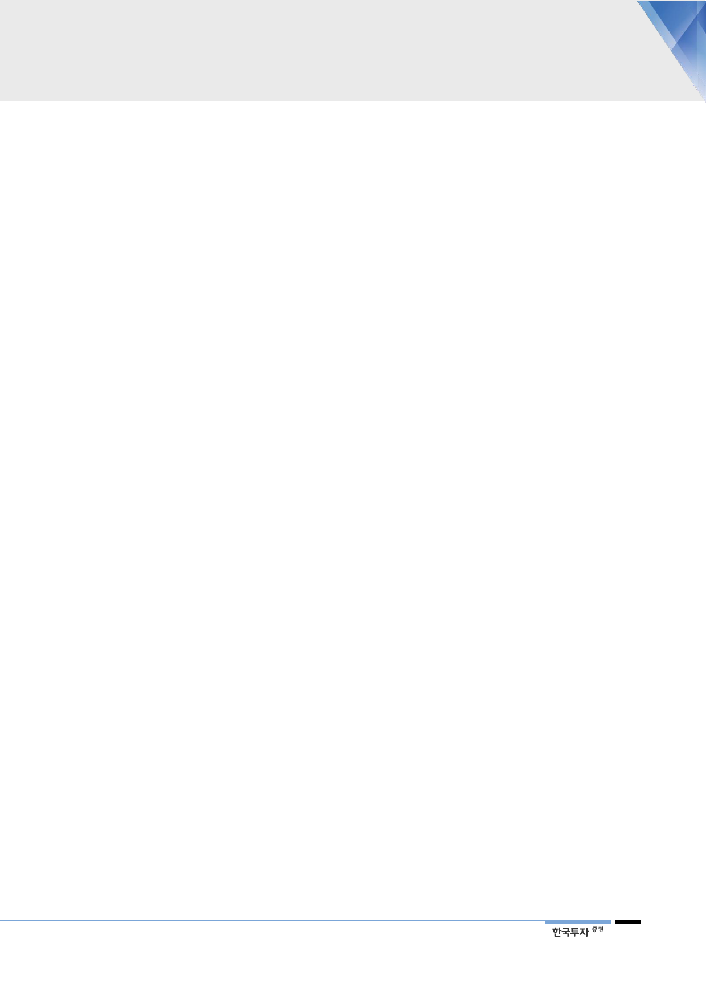

기업개요 및 용어해설
■ 기업개요
지주회사 및 경영컨설팅 서비스업 및 산업용 로봇제조업을 영위하는 회사. 현대중공업의 투자, 로봇 사업부문을 인적 분
할해 신설된 법인. 현대오일뱅크 지분 91.1% 보유.
■ 용어해설
Retrofit: 선박 개조 사업(scrubber, BWTS) 등 친환경 규제에 부합하는 선박 개조 사업
BWTS(Ballast Water Treatment System): 선박평형수처리장치. 선박의 평형수 내 수상생물과 병원균을 제거/살
균하거나 그 유입이나 배출을 방지하기 위한 설비
Scrubber(스크러버): 선박의 메인 엔진에서 나오는 배기가스 내 산성물질인 황산화물(SOx)을 알카리성을 띠는
바닷물로 세척해 정화하는 황산화물 배출량 저감장치
LNG(Liquefied Natural Gas): 가스전에서 채취한 천연가스를 정제하여 얻은 메탄을 냉각해 액화시킨 액화천연가
스로 선박 환경 규제 강화에 따라 친환경 연료로 주목받고 있음
FSRU(Floating Storage Regasification Unit): 부유식 가스 저장, 재기화 설비
17